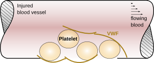
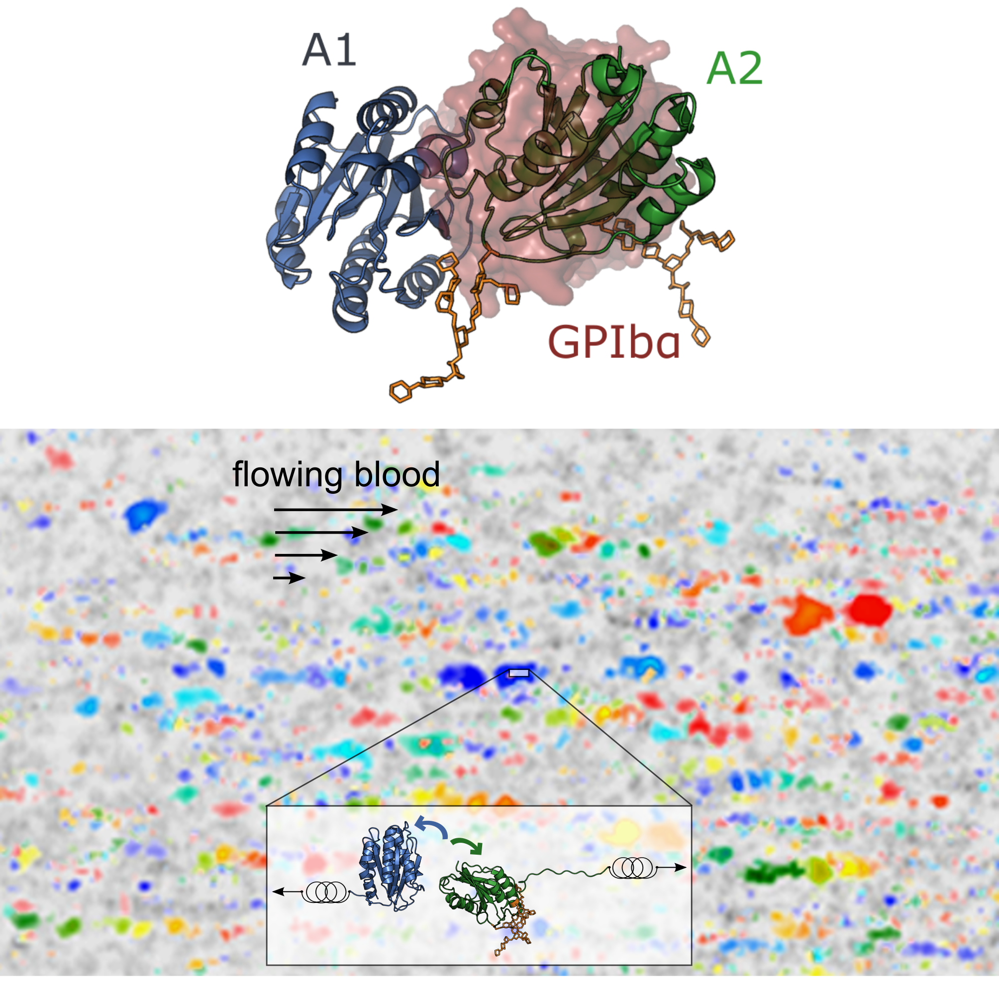
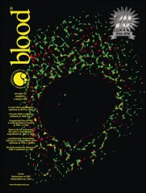
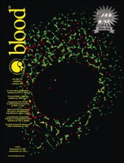

Computational Biophysics
Max Planck Tandem Group
Max Planck Tandem Group
|
von Willebrand Factor

Von Willebrand Factor (VWF) is a giant multimeric protein playing a key adhesive role in hemostasis. VWF binds platelets to the extracellular matrix of the endothelium at sites of vascular injury. VWF is only active under shear stess conditions, induced by flowing blood, and its malfunction results in several types of bleeding dissorders. Our aim is to decipher the mechanism of function of VWF, by establishing the link between its molecular mechanical properties and its macroscopic behaviour under normal physiological (but also pathological) conditions.

 We describe a new force-sensory mechanism for VWF-platelet binding, which addresses the inactivation of VWF by shielding of its adhesion sites, combining molecular dynamics (MD) simulations, atomic force microscopy (AFM), and microfluidic experiments. Our simulations demonstrate that the VWF A2 domain (green) targets a specific region at the VWF A1 domain (blue), corresponding to the binding site of the platelet glycoprotein Ibα (GPIbα) receptor (red), thereby causing its blockage (up). This implies autoinhibition of the VWF for the binding of platelets mediated by the A1-A2 protein-protein interaction. A stretching force dissociated the A1A2 complex before unfolding of A2, ensuring VWF platelet-binding activation before unfolding-mediated proteolytic cleavage (inset down). Microfluidic experiments with an A2-deletion VWF mutant resulted in increased platelet binding, corroborating the key autoinhibitory role of the A2 domain within VWF multimers (middle). Furthermore, this mode of autoinhibition is largely dependent on the redox state of the vicinal disulfide bond of the A2 domain (down). Overall, autoinhibition of VWF mediated by force-dependent interdomain interactions offers the molecular basis for the shear-sensitive growth of VWF-platelet aggregates, and might be similarly involved in shear-induced VWF self-aggregation and other force-sensing functions in hemostasis.
We describe a new force-sensory mechanism for VWF-platelet binding, which addresses the inactivation of VWF by shielding of its adhesion sites, combining molecular dynamics (MD) simulations, atomic force microscopy (AFM), and microfluidic experiments. Our simulations demonstrate that the VWF A2 domain (green) targets a specific region at the VWF A1 domain (blue), corresponding to the binding site of the platelet glycoprotein Ibα (GPIbα) receptor (red), thereby causing its blockage (up). This implies autoinhibition of the VWF for the binding of platelets mediated by the A1-A2 protein-protein interaction. A stretching force dissociated the A1A2 complex before unfolding of A2, ensuring VWF platelet-binding activation before unfolding-mediated proteolytic cleavage (inset down). Microfluidic experiments with an A2-deletion VWF mutant resulted in increased platelet binding, corroborating the key autoinhibitory role of the A2 domain within VWF multimers (middle). Furthermore, this mode of autoinhibition is largely dependent on the redox state of the vicinal disulfide bond of the A2 domain (down). Overall, autoinhibition of VWF mediated by force-dependent interdomain interactions offers the molecular basis for the shear-sensitive growth of VWF-platelet aggregates, and might be similarly involved in shear-induced VWF self-aggregation and other force-sensing functions in hemostasis.
Read more: Posch, Aponte-Santamaría, Schwartzl, et al. J. Struct. Biol (2017) Butera,..., Aponte-Santamaría, et al. Sci. Adv. (2018)
 Once the hemostatig plug has been formed and the injured site is sealed, VWF is cleaved by the protein ADAMTS13 to prevent excessive platelet aggregation (cleavage site located at the A2 domain, purple). In collaboration with the groups of Professors Joachim Rädler (Munich), Reinhard Schneppenheim (Hamburg), and Ulrich Budde (Hamburg), we for the first time discovered how a naturally occurring disease-related mutation can drastically accelerate the cleavage almost 20-fold (G1629E, green), resulting in unwanted bleeding. Using computer simulations, we elucidated the molecular mechanism behind such excessive cleavage activity. Despite their adverse effects in vivo, the study sees a use for these types of VWF mutants as efficient and sensitive test assays for detecting ADAMTS13 in clinical laboratories.
Once the hemostatig plug has been formed and the injured site is sealed, VWF is cleaved by the protein ADAMTS13 to prevent excessive platelet aggregation (cleavage site located at the A2 domain, purple). In collaboration with the groups of Professors Joachim Rädler (Munich), Reinhard Schneppenheim (Hamburg), and Ulrich Budde (Hamburg), we for the first time discovered how a naturally occurring disease-related mutation can drastically accelerate the cleavage almost 20-fold (G1629E, green), resulting in unwanted bleeding. Using computer simulations, we elucidated the molecular mechanism behind such excessive cleavage activity. Despite their adverse effects in vivo, the study sees a use for these types of VWF mutants as efficient and sensitive test assays for detecting ADAMTS13 in clinical laboratories.
Read more:
 
VWF, a multimeric protein, dimerizes in endoplasmic reticulum by
disulfide bond formation between two C-terminal CK domains. The
molecular mechanism of dimerization and catalytic enzyme involved in
disulfide bonds formation were till now unknown.
In a multidisciplinary work, we discovered that the protein disulfide isomerize (PDI) is responsible for the dimerization of VWF, a process occurring in the endoplasmic reticulum, before VWF is released to the blood stream. We propose a sequential formation of disulfide bonds between the terminal CK domains as the molecular mechanism for dimerization. Our work also explains the causes for the abolishment of VWF dimerization, induced by disease-related amino-acid mutations.

VWF, a multimeric protein, dimerizes in endoplasmic reticulum by
disulfide bond formation between two C-terminal CK domains. The
molecular mechanism of dimerization and catalytic enzyme involved in
disulfide bonds formation were till now unknown.
In a multidisciplinary work, we discovered that the protein disulfide isomerize (PDI) is responsible for the dimerization of VWF, a process occurring in the endoplasmic reticulum, before VWF is released to the blood stream. We propose a sequential formation of disulfide bonds between the terminal CK domains as the molecular mechanism for dimerization. Our work also explains the causes for the abolishment of VWF dimerization, induced by disease-related amino-acid mutations.
Read more: M. A. Brehm, V. Huck, C. Aponte-Santamaría, et al. Thromb Haemost. (2014)
Our experimental collaborators (from the Schneider lab in Mannheim) demonstrated that the von Willebrand factor (VWF) interacts with DNA, an interaction with implications under inflammatory processes. Our simulations complemented these findings, by suggesting that a positively charged region at the VWF A1 domain serves as the binding site for the -negatively charged- DNA, and that GP1Ba-platelets complexes and heparin compete with DNA for this binding site.
Read more:
|